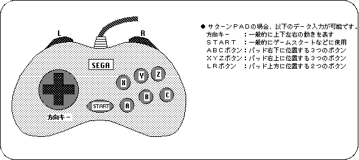
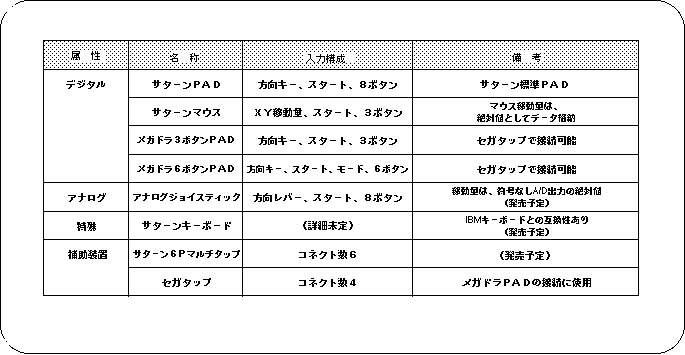

Return to previous page | Return to menu ｜ Go to next page
This chapter explains the recognition method and actual operation of Sega Saturn's data input device using Saturn PAD, which is a typical input device of Sega Saturn.
Saturn PAD has four direction keys, ABCXYZ buttons, LR button at the top of the controller, and start button as input devices.
We will explain how the data input using each input device of these controllers is judged inside SEGA Saturn together with the sample program.
Sega Saturn can receive data from various data input devices connected to the input port and reflect them in the program.
The data input device mainly used in Sega Saturn is a control PAD attached to the main unit called Saturn PAD
Saturn PAD is an input device composed of direction keys, start button, ABC button, XYZ button, and LR button arranged to point in 4 directions.

In addition to Saturn PAD, Sega Saturn supports the input devices shown in Table 9-1.
Please note that some of the devices in this table are not currently available (though they will be released in the future).

Note) Refer to “HARDWARE MANUAL vol.1” for details of each input device.